Aquí ves los eventos que administras, con su tipo, su estado y sus fechas, y puedes crear uno nuevo con el botón «+».
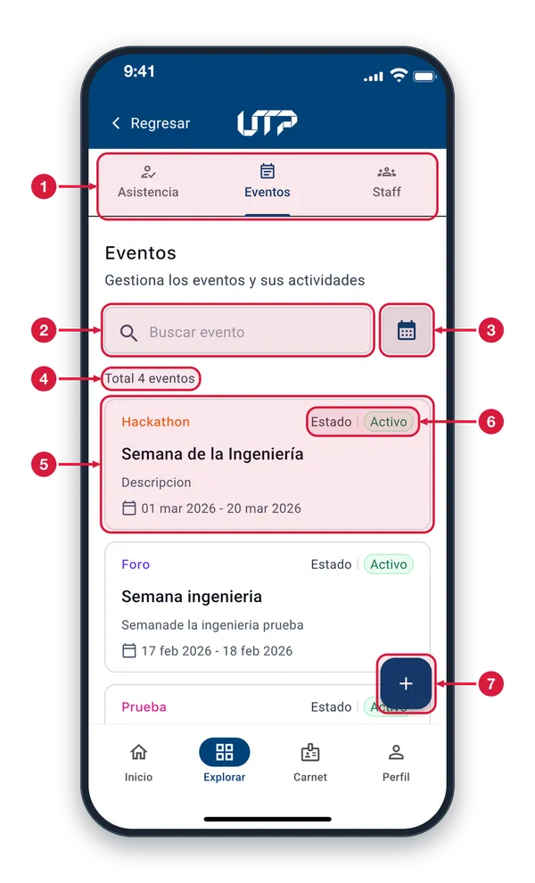
Pestañas de Gestión Asistencia, Eventos y Staff. Estás en Eventos (resaltada en azul). Toca otra pestaña para cambiar de sección.
Buscar evento Escribe aquí el nombre del evento que buscas para encontrarlo en la lista.
Filtro por fecha Toca el icono del calendario para filtrar los eventos por fecha.
Total de eventos Cuenta cuántos eventos hay en la lista (en el ejemplo, 4).
Tarjeta de evento Cada tarjeta es un evento: su tipo (p. ej., Hackathon o Foro), su estado, su nombre, una descripción y sus fechas. Desplázate para ver los demás; todos funcionan igual.
Estado del evento Indica en qué estado está el evento. «Activo» aparece en verde.
Crear evento (+) Toca el botón «+» para crear un evento nuevo.
Pestaña Eventos2 de 4
Aquí ves la lista de eventos. Busca, filtra por fechas, abre uno para ver su detalle o crea uno nuevo.
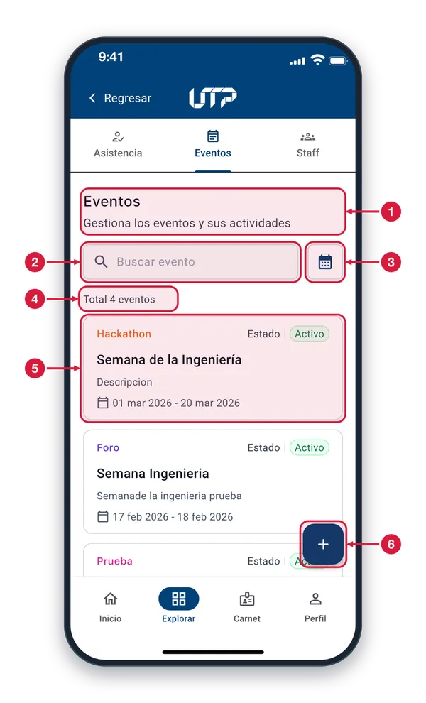
Encabezado de Eventos Pestaña desde la que gestionas los eventos y, dentro de cada uno, sus actividades.
Buscar evento Escribe parte del nombre, del tipo o de la descripción del evento: la lista se filtra mientras escribes, sin importar mayúsculas ni tildes.
Filtrar por fechas Toca el calendario para elegir un rango de fechas y ver solo los eventos de esos días. Un chip con el rango te deja quitar el filtro.
Total de eventos Cuenta los eventos que cumplen la búsqueda y el filtro de fechas.
Tarjeta de evento Muestra el tipo (en color), el estado (Activo), el nombre, la descripción y las fechas. Toca la tarjeta para abrir el detalle del evento; las demás funcionan igual.
Crear evento Abre «Crear Evento» para registrar uno nuevo. Solo los responsables de una actividad vigente pueden crear eventos.
Crear un evento3 de 4
Formulario para crear un evento. Se abre con el botón «+» de la pestaña Eventos. Llena los campos y toca «Crear».
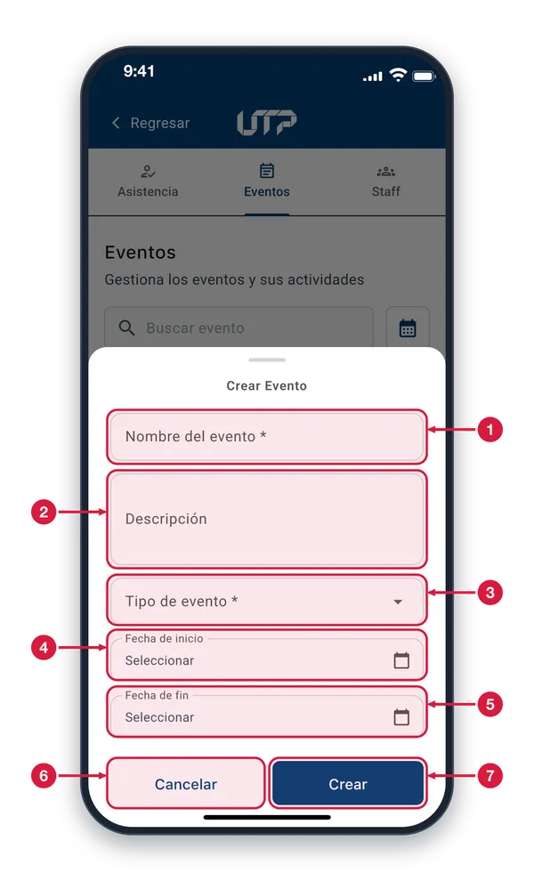
Nombre del evento Obligatorio. Escribe el nombre con el que se conocerá el evento. Si lo dejas vacío, la app marca «Campo requerido».
Descripción Opcional. Cuenta de qué trata el evento. Se ve en la tarjeta de la lista y en el detalle del evento.
Tipo de evento Obligatorio. Toca el campo y elige el tipo de la lista (por ejemplo, Foro o Congreso). Sin tipo, la app pide «Selecciona un tipo».
Fecha de inicio Opcional. Toca el campo: eliges el día en el calendario y luego la hora. Dice «Seleccionar» hasta que eliges una fecha.
Fecha de fin Opcional. Se elige igual que la de inicio. Si la fecha que eliges deja a la otra fuera de orden, la otra se borra y debes elegirla de nuevo.
Cancelar Cierra el formulario sin guardar el evento.
Crear Guarda el evento. Si falta el nombre o el tipo, la app lo marca. Al guardar ves «Evento creado» y el evento aparece en la lista de la pestaña Eventos.
Detalle de un evento4 de 4
Resume el evento: tipo, estado, fechas, descripción y cifras. Desliza para ver Staff del evento, Certificados y actividades.
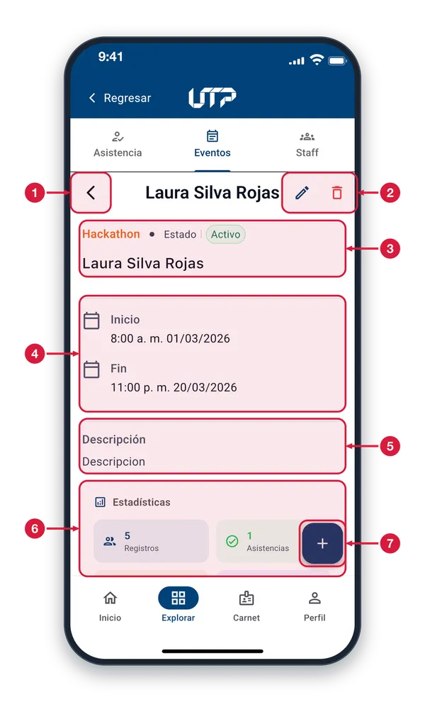
Flecha de regreso Vuelve a la lista de eventos.
Editar y eliminar evento El lápiz abre «Editar Evento»: cambia lo que necesites y toca Guardar. El bote de basura pide confirmar y borra el evento y sus actividades. Solo para responsables de una actividad vigente.
Tipo, estado y nombre Arriba, el tipo de evento y su estado (Activo, en verde); debajo, el nombre del evento.
Fechas de inicio y fin Día y hora en que empieza y termina el evento. Si el evento no tiene fechas, estas filas no aparecen.
Descripción Texto con el que se describió el evento. Si no tiene descripción, este bloque no aparece.
Estadísticas Cuatro cifras: Registros (personas inscritas), Asistencias (personas que asistieron), Tasa de asistencia y Actividades. Desliza para ver todas.
Agregar actividad Abre «Crear Actividad» para añadir una actividad a este evento.
GESTIÓN DE EVENTOS · PESTAÑA STAFF
Pestaña Staff: roles del sistema1 de 7
En Staff administras los roles que se pueden dar al personal de apoyo y entras al staff de cada evento.
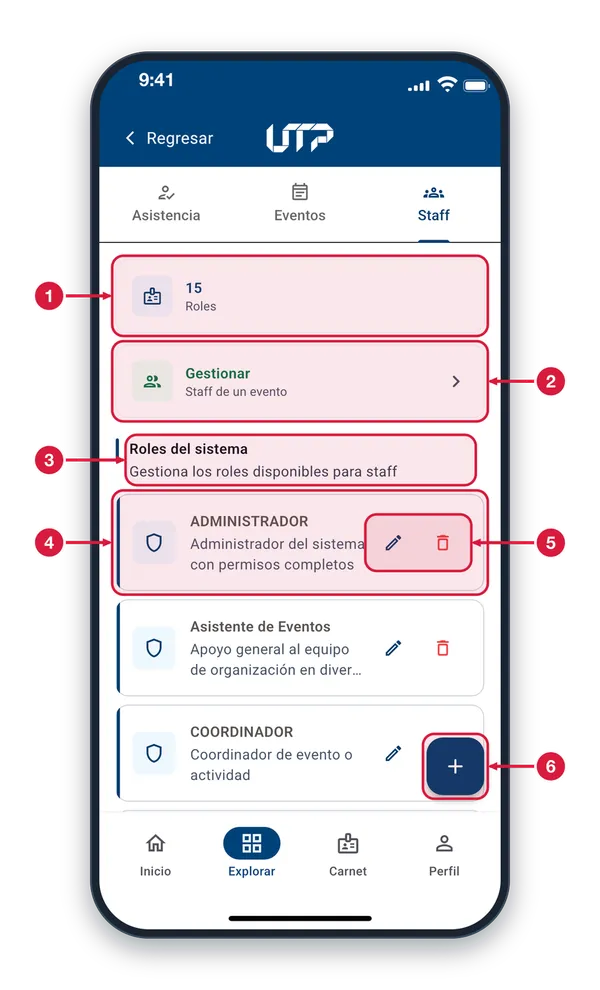
Contador de roles Muestra cuántos roles hay disponibles para asignar al staff de los eventos.
Staff de un evento Toca «Gestionar» para elegir un evento y ver o administrar el staff asignado a él. Se abre la hoja «Elige el evento».
Roles del sistema Lista de roles que puedes dar al staff, iguales para todos los eventos. Todos la ven, pero solo los responsables de una actividad vigente pueden crear, editar o eliminar roles.
Tarjeta de rol Muestra el nombre del rol y su descripción. Estos son los roles que eliges al asignar staff. Las demás tarjetas funcionan igual.
Editar y eliminar rol El lápiz abre «Editar rol» para cambiar nombre y descripción. El bote de basura pide confirmar y elimina el rol; si ya está en uso, no se elimina y la app avisa.
Crear rol Abre «Nuevo rol»: escribe el nombre (obligatorio) y, si quieres, una descripción, y toca Crear. El rol queda disponible para asignarlo al staff.
Elegir el evento del staff2 de 7
Al tocar «Gestionar» se abre esta hoja con los eventos. Elige uno para ver y administrar su staff.
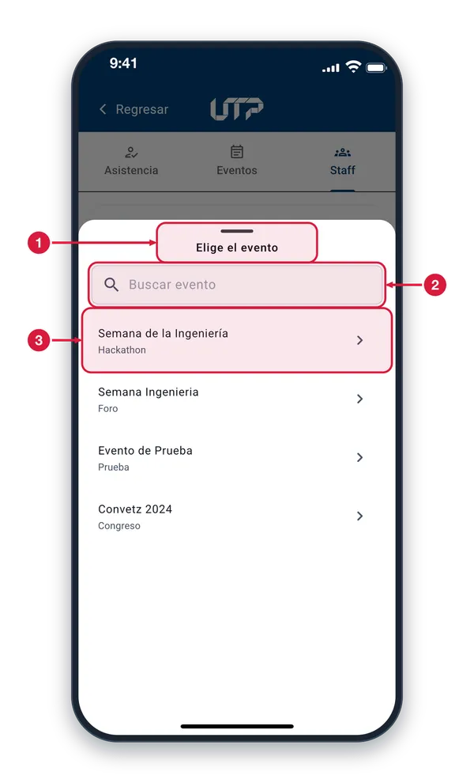
Hoja «Elige el evento» Se abre desde abajo al tocar Gestionar. Para cerrarla sin elegir nada, desliza hacia abajo o toca fuera de la hoja.
Buscar evento Escribe el nombre o el tipo del evento y la lista se filtra mientras escribes. Si nada coincide, la hoja te lo avisa.
Evento de la lista Muestra el nombre y el tipo del evento; son los mismos de la pestaña Eventos. Toca una fila para abrir «Staff del evento». Las demás filas funcionan igual.
Staff del evento3 de 7
Aquí ves quién forma parte del staff del evento elegido y sumas a más personas. Se abre al elegir un evento en la hoja.
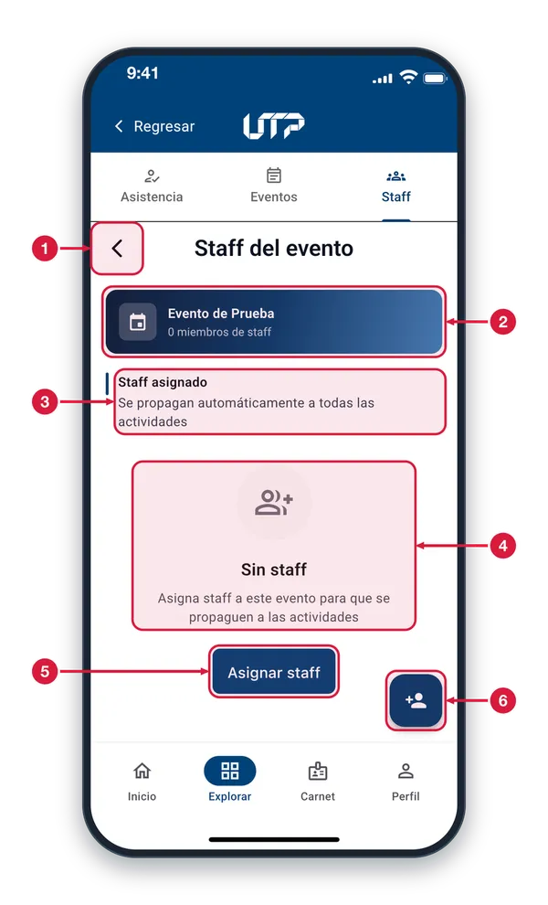
Flecha de regreso Vuelve a la pestaña Staff, con la lista de roles del sistema.
Evento y total de staff Muestra el nombre del evento elegido y cuántas personas tiene asignadas como staff.
Staff asignado Cada persona que asignes se agrega sola a todas las actividades del evento, incluidas las que crees después. Tira de la pantalla hacia abajo para actualizar.
Aviso «Sin staff» Sale mientras el evento no tiene personas asignadas. Cuando las haya, verás una tarjeta por persona con su nombre, documento y rol, y un botón rojo para quitarla (pide confirmar).
Asignar staff Abre la hoja «Asignar staff al evento» para sumar a una persona con su rol. Solo los responsables de una actividad vigente pueden asignar o quitar staff.
Botón Asignar staff Hace lo mismo que el botón del centro y sigue visible cuando la lista ya tiene personas.
Asignar staff al evento4 de 7
Formulario para dar un rol a una persona dentro del evento. Se abre con «Asignar staff»: elige a la persona y su rol.
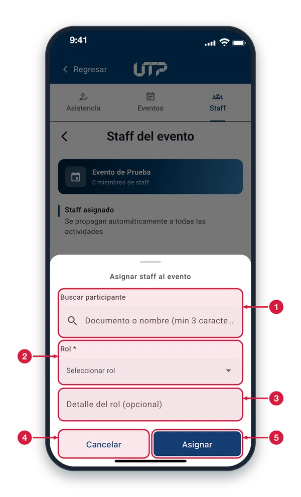
Buscar participante Escribe el documento o el nombre de la persona (mínimo 3 caracteres). Cuando dejas de escribir, aparecen las coincidencias para que elijas una.
Rol (obligatorio) Toca el campo para abrir la lista de roles y elige el que tendrá la persona en el evento. Sin rol no puedes asignar.
Detalle del rol (opcional) Texto libre para precisar la función, como la zona o el turno que atiende. Puedes dejarlo vacío.
Cancelar Cierra la hoja sin guardar nada.
Asignar Guarda a la persona en el staff del evento y en todas sus actividades. Si falta la persona o el rol, o ya estaba asignada, la app avisa. Al terminar ves «Staff asignado».
Buscar a la persona5 de 7
Mientras escribes el documento o el nombre, la hoja muestra las coincidencias. Toca a la persona que quieres asignar.
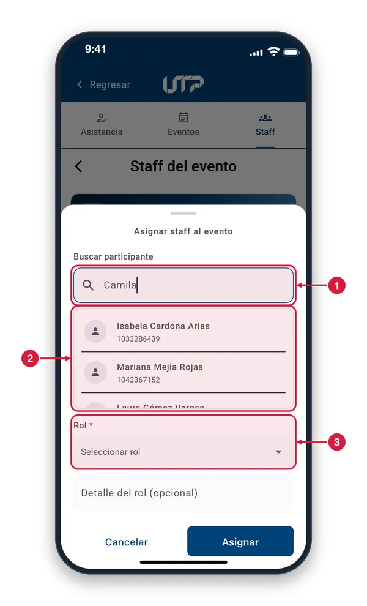
Campo de búsqueda Escribe al menos 3 letras o números del nombre o del documento. Mientras la app busca, aparece un indicador a la derecha. Si no sale ninguna lista, no hay coincidencias.
Resultados Cada fila muestra el nombre y el documento de una persona. Toca la fila para elegirla; desliza para ver más resultados.
Rol y detalle Después de elegir a la persona, selecciona el rol (obligatorio) y, si quieres, escribe un detalle del rol.
Persona elegida6 de 7
Al tocar a una persona de los resultados queda seleccionada. Ahora elige su rol y toca «Asignar».
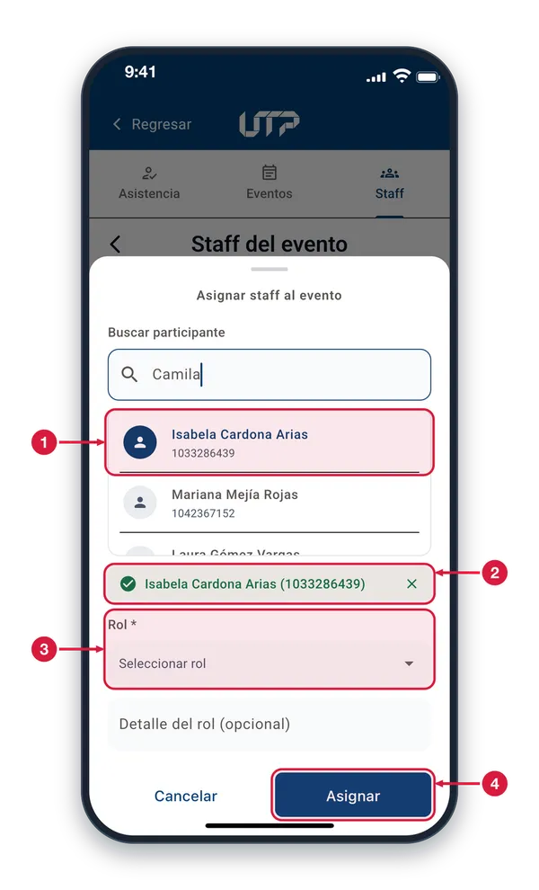
Fila seleccionada La persona que tocaste se resalta: su icono se vuelve azul y su nombre cambia de color. Para elegir a otra, toca otra fila.
Persona elegida Confirma a quién vas a asignar, con su nombre y su documento. Toca la X para quitarla y buscar a otra persona.
Rol (obligatorio) Es el siguiente paso: toca «Seleccionar rol» y elige uno de la lista.
Asignar Con persona y rol elegidos, toca Asignar para guardar. Si falta alguno, la app avisa «Selecciona un participante» o «Selecciona un rol».
Elegir el rol7 de 7
Al tocar «Seleccionar rol» se abre la lista de roles. Toca el que tendrá la persona en el evento.
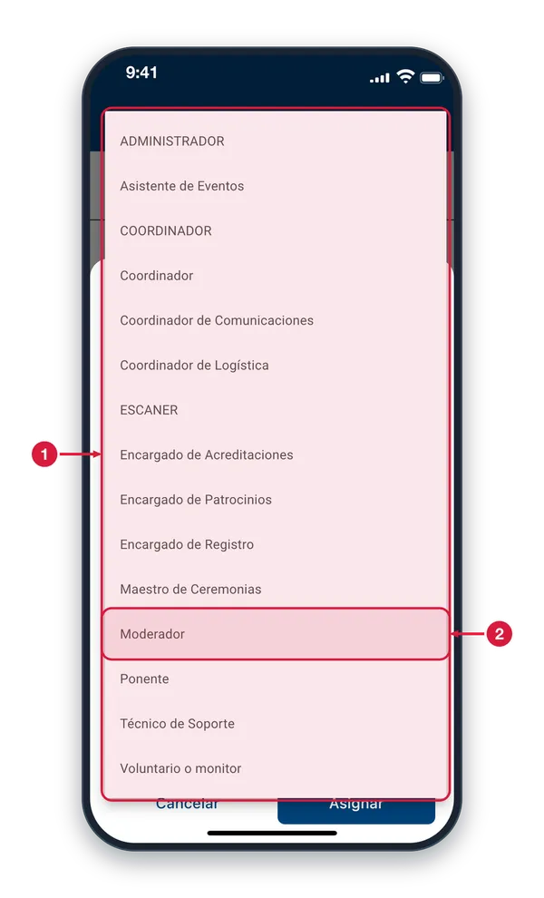
Lista de roles Son los roles del sistema, los mismos de la pestaña Staff. Si falta uno, créalo allí con el botón «+» (solo responsables de una actividad vigente).
Un rol Toca un rol para elegirlo: la lista se cierra y el rol queda en el campo «Rol». Puedes abrir la lista otra vez para cambiarlo.
GESTIÓN DE EVENTOS · SIN CONEXIÓN
Sin conexión: Asistencia1 de 2
Si la pestaña Asistencia no logra cargar tus actividades, aparece este aviso con la opción de volver a intentarlo.
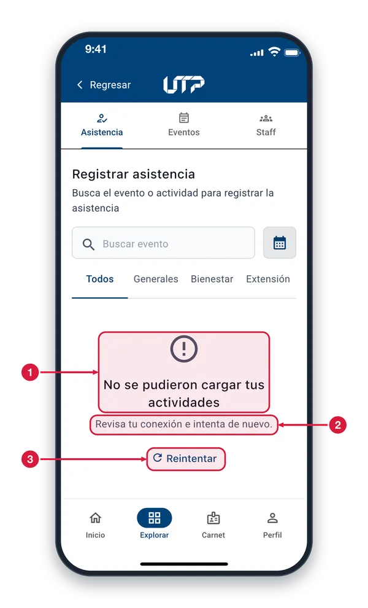
Aviso de error El icono y el título te avisan que la lista de actividades no se pudo cargar, normalmente porque no hay conexión a internet.
Qué hacer Comprueba que tengas Wi-Fi o datos móviles y que la señal sea estable.
Reintentar Toca «Reintentar» para volver a cargar las actividades. Si el aviso sigue, cambia de red o espera a tener mejor señal e inténtalo otra vez.
Sin conexión: Eventos2 de 2
Sin conexión, esta pestaña sigue mostrando la última lista que cargó. Recupera la conexión para ver los datos al día.
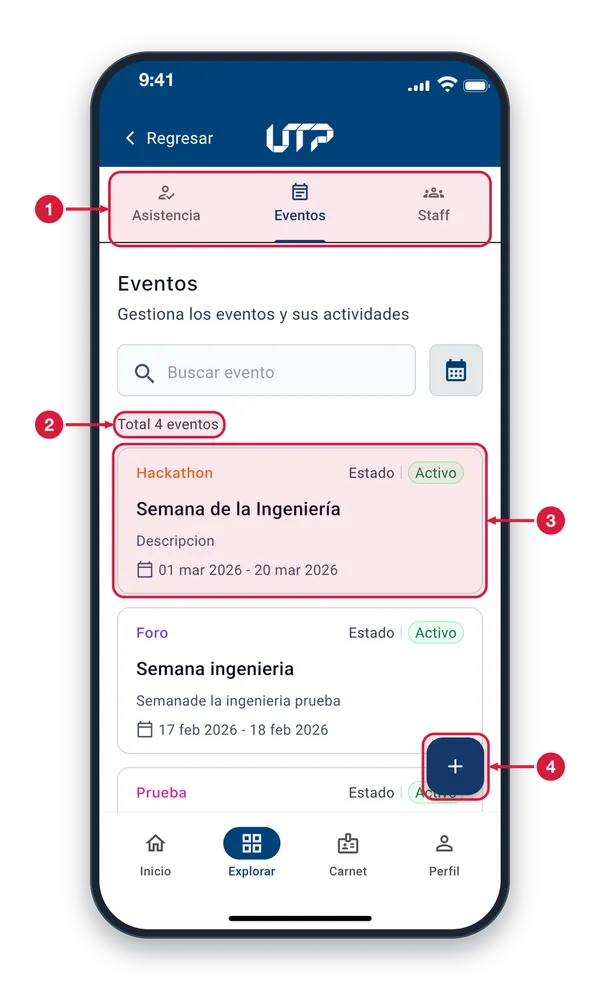
Pestaña Eventos Estás en la pestaña Eventos. Si no tienes conexión, la pantalla conserva la lista que cargó antes. Para actualizarla, recupera la conexión y vuelve a entrar.
Total de eventos Es la cantidad de eventos de la última carga. Si esperas ver eventos nuevos, revisa tu conexión.
Lista de la última carga Estas tarjetas son las que se cargaron antes de perder la conexión. Los cambios recientes de estado o de fechas pueden no verse todavía.
Crear evento (+) Abre la creación de un evento nuevo. Hazlo cuando tengas conexión a internet.